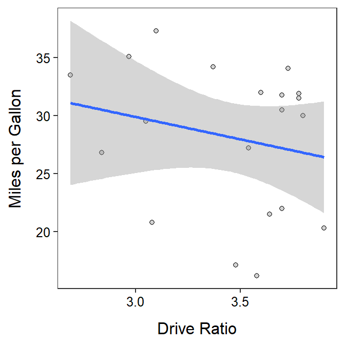

br <- read.csv("BirthRatio.csv")lm.br <- lm(propmale~year,data=br)
anova(lm.br)Analysis of Variance Table
Response: propmale
Df Sum Sq Mean Sq F value Pr(>F)
year 1 2.2691e-06 2.2691e-06 33.399 1.439e-05
Residuals 19 1.2909e-06 6.7940e-08 summary(lm.br)Coefficients:
Estimate Std. Error t value Pr(>|t|)
(Intercept) 6.201e-01 1.860e-02 33.340 < 2e-16
year -5.429e-05 9.393e-06 -5.779 1.44e-05
Residual standard error: 0.0002607 on 19 degrees of freedom
Multiple R-squared: 0.6374, Adjusted R-squared: 0.6183
F-statistic: 33.4 on 1 and 19 DF, p-value: 1.439e-05
wfc <- read.csv("https://raw.githubusercontent.com/droglenc/NCData/master/Flycatcher.csv")
lm.wfc <- lm(winglen~date,data=wfc)
summary(lm.wfc)Coefficients:
Estimate Std. Error t value Pr(>|t|)
(Intercept) 91.07024 10.74829 8.473 4.75e-08
date -0.15576 0.07263 -2.145 0.0444
Residual standard error: 1.675 on 20 degrees of freedom
Multiple R-squared: 0.187, Adjusted R-squared: 0.1463
F-statistic: 4.599 on 1 and 20 DF, p-value: 0.04445 rSquared(lm.wfc)[1] 0.186974anova(lm.wfc)Analysis of Variance Table
Response: winglen
Df Sum Sq Mean Sq F value Pr(>F)
date 1 12.903 12.9026 4.5995 0.04445
Residuals 20 56.105 2.8053
gas <- read.csv("https://raw.githubusercontent.com/droglenc/NCData/master/CarMPG.csv")
gasI <- filter(gas,type=="Import")
lm.gas <- lm(mpg~drat,data=gasI)
summary(lm.gas)Coefficients:
Estimate Std. Error t value Pr(>|t|)
(Intercept) 41.501 13.928 2.980 0.00803
drat -3.864 4.014 -0.963 0.34853
Residual standard error: 6.346 on 18 degrees of freedom
Multiple R-squared: 0.04895, Adjusted R-squared: -0.003885
F-statistic: 0.9265 on 1 and 18 DF, p-value: 0.3485 rSquared(lm.gas)[1] 0.0489514anova(lm.gas)Analysis of Variance Table
Response: mpg
Df Sum Sq Mean Sq F value Pr(>F)
drat 1 37.31 37.309 0.9265 0.3485
Residuals 18 724.86 40.270 ggplot(data=gasI,mapping=aes(x=drat,y=mpg)) +
geom_point(pch=21,color="black",fill="lightgray") +
labs(x="Drive Ratio",y="Miles per Gallon") +
theme_NCStats() +
geom_smooth(method="lm")`geom_smooth()` using formula 'y ~ x'